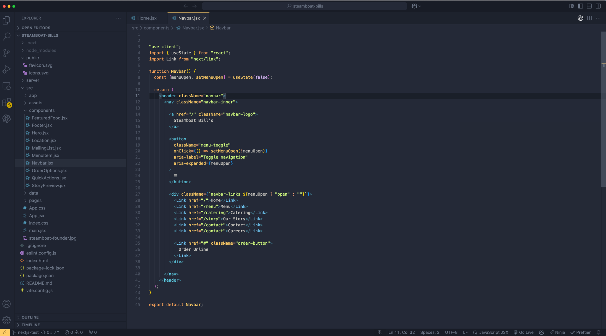
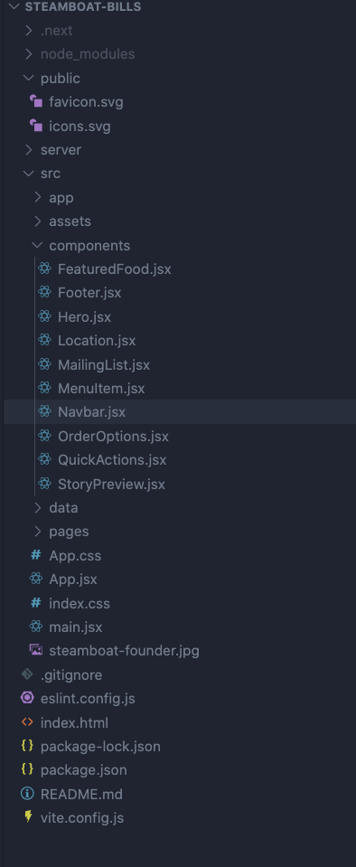
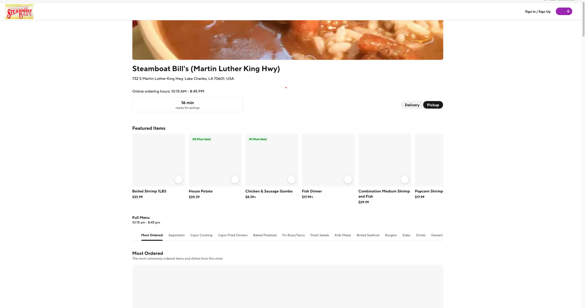

Purpose
I built Steamboat Bill's as a hands-on project to strengthen my understanding of React. Using a restaurant website gave me a practical way to build navigation, featured food sections, menu layouts, and calls to action while learning how a React app fits together.
A major focus was learning proper project architecture.
I broke the interface into components such as
Navbar, Hero,
FeaturedFood, MenuItem,
OrderOptions, and Footer.
This helped me practice giving each component a clear
responsibility and combining those pieces into complete
pages.
I also used the project to learn Vercel hosting and deployment. Publishing the app gave me experience taking a React project from local development to a live site that others can visit and review.
Another focus was exploring how the site could connect visitors to the restaurant's existing online ordering and POS workflow. I worked on the customer journey from browsing the restaurant site to choosing an ordering option, with the goal of making that transition straightforward.
What I Practiced
React component composition, reusable UI, organized folders, navigation state, and Vercel deployment. The project also includes learning work with Next.js routing.
Tech Stack
React
Components and UI state
JavaScript / JSX
Interface logic and markup
CSS
Styling and responsive layout
Next.js
Routing practice
Vercel
Live app hosting and deployment
Git / GitHub
Version control and source code
Project Screenshots
The restaurant interface, component structure, and ordering experience.

Restaurant Homepage
A restaurant-focused interface bringing together navigation, featured food, and ordering calls to action through React components.

React Components and Architecture
Organizing the interface into focused components helped me understand how to structure a React project and keep its code easier to maintain.

Online Ordering / POS Connection Goal
The restaurant's existing ordering interface served as a reference for the ordering journey. My focus was learning how the React site could direct customers into that workflow. This screenshot shows the external ordering platform.